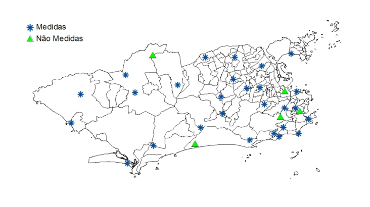
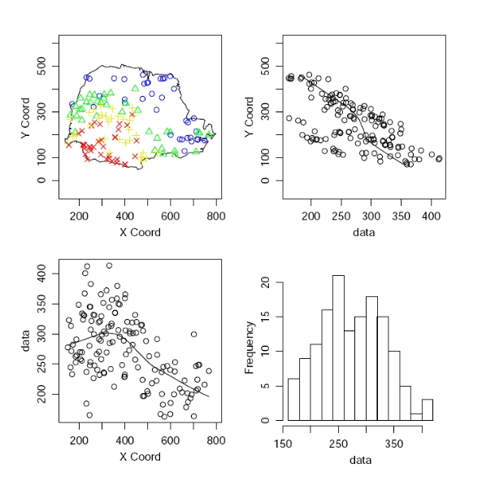
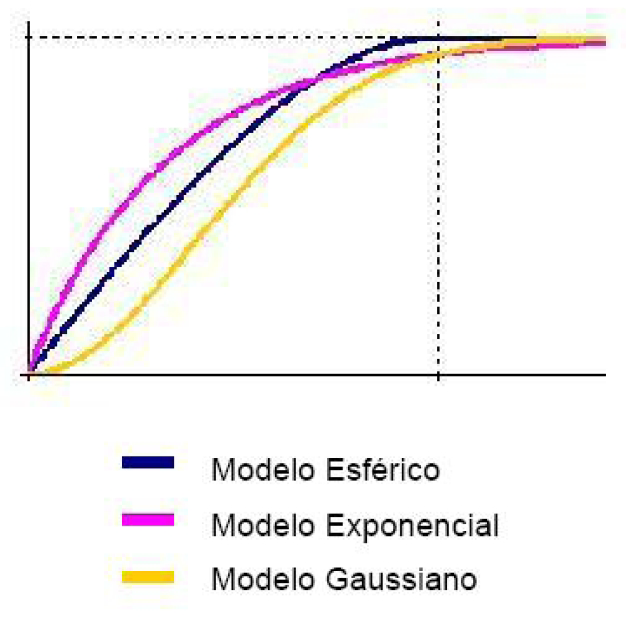
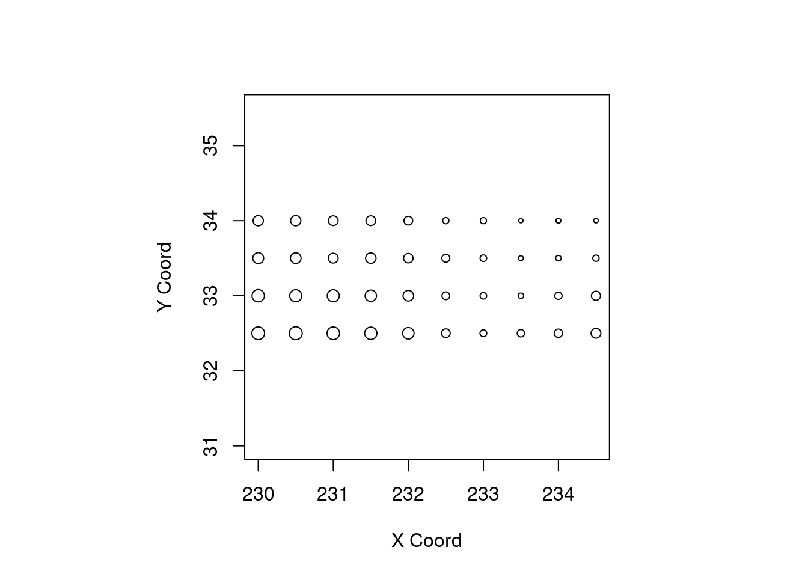
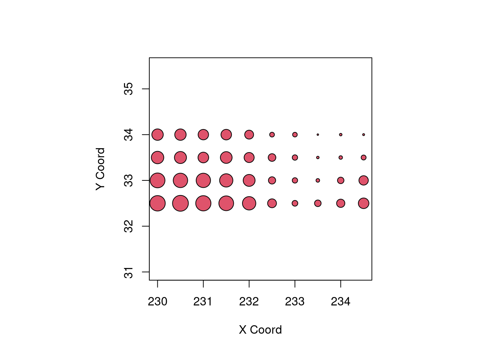
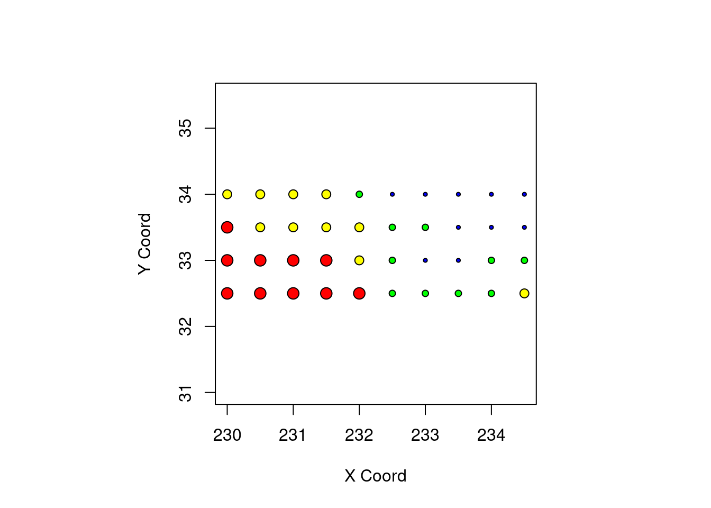
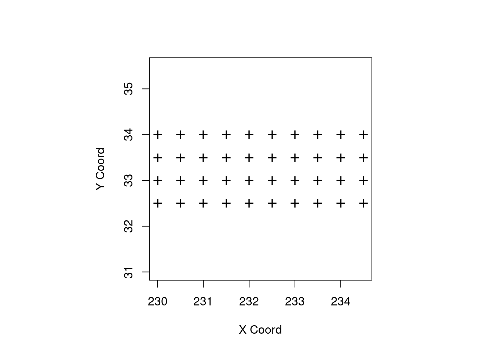
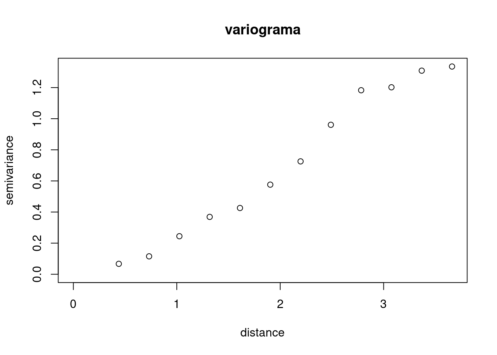

9 Geoestatística
9.1 Conceito
Podemos definir como sendo uma análise de um atributo espacialmente contínuo amostrado em localizações fixas.
Os dados compreendem um conjunto de localizações (em geral latitudes e longitudes), mas agregados a cada uma delas, uma medida. Como por exemplo:
O volume de chuva medido em estações de monitoramento;
O número de ovos do Aedes aegypti postados em ovitrampas.
9.2 Objetivos
Entender o padrão dos valores amostrados nestas localizações;
Estimar valores em localizações sem medidas dado os valores observados em localizações com medidas.
9.3 Principais aplicações
Geologia
Ciências ambientais (chuva, temperatura, umidade, poluentes no ar, etc.)
9.4 Exemplo
Estações de monitoramento pluviométrico da cidade do Rio de Janeiro.

Interesse: Fazer previsão para alguns pontos da cidade ou para toda a cidade.
9.5 Efeitos
Os fenômenos espaciais são o resultado de uma mistura de efeitos de primeira e segunda ordem.
Efeitos de primeira ordem: variação do valor médio do processo no espaço, ou seja, tendência global ou de grande escala.
Efeitos de segunda ordem: resultam da estrutura de correlação espacial ou dependência espacial do processo, ou seja, são efeitos locais ou de pequena escala.
9.6 Formalizando
Seja \(Y(s)\) um vetor aleatório nas localizações \(s\), onde \(s\) varia continuamente sobre \(D\), um subconjunto fixo de \(R^2\) .
Em geral existem \(n\) estações de coleta de dados onde são observadas as variáveis \((Y(s_1), ... , Y(s_n))\).
Podemos particionar os dados espacialmente contínuos em dois termos: uma média e um erro associado:
\[Y(s) = \mu(s) + e(s)\]
- A análise espacial é composta por um conjunto de procedimentos cuja finalidade é a escolha de um modelo que considere explicitamente a componente espacial existente.
9.7 Efeito de primeira ordem: regressão linear
Supondo \(\mu(s) = \mu(x, y) = \beta_0 + \beta_1 x_1 + \beta_2 x_2\), temos
\[Y(s) = \mu(s) + e(s)\]
\[Y(s) = \beta_0 + \beta_1 x_1 + \beta_2 x_2 + e(s)\] sendo \(e(s) \sim N(0, \sigma^2)\)
9.8 Efeito de segunda ordem: regressão espacial
Supondo \(\mu(s) = \mu(x, y) = \beta_0 + \beta_1 x_1 + \beta_2 x_2\), temos
\[Y(s) = \mu(s) + e(s)\]
\[Y(s) = \beta_0 + \beta_1 x_1 + \beta_2 x_2 + e(s)\] sendo \(e(s) \sim N(0, \sigma^2)\)
Deste modo, denotamos a média e a variância do processo por:
\(E(Y(s)) = \mu(s)\) e \(Var(Y(s)) = \sigma^2(s)\)
A covariância desse processo em dois pontos distintos, \(s_i\) e \(s_j\) , será dada por:
\[C(s_i, s_j) = E((Y(s_i) − \mu(s_i))(Y(s_j) − \mu(s_j))\]
E a correlação será:
\[\rho (s_i, s_j) = \dfrac{C(s_i, s_j)}{\sigma(s_i) \sigma(s_j)} \]
9.9 Análise exploratória
Inicialmente são utilizadas técnicas de análise exploratórias e de visualização dos dados.
Para os efeitos de primeira ordem:
Mapa com a localização dos pontos e a intensidade do processo.
Plot de \(Y(s)\) versus cada coordenada, por exemplo latitude e longitude.
Para os efeitos de segunda ordem:
Covariograma
Variograma
9.9.1 Análise exploratória: efeitos de primeira ordem
Exemplo: Medidas pluviométricas em 143 estações monitoradoras no estado do Paraná
Analisando a variação da intensidade da chuva segundo Latitudine (Y) e Longitude (X)

9.10 Simplificações: Estacionariedade e Isotropia
Quando o processo é estacionário:
A média \(E(Y(s)) = \mu\) para todo \(s\)
A variância \(Var(Y(s + h) − Y (s)) = 2 \gamma (h)\)
para a qual \(2 \gamma (h)\) é chamado de variograma e \(\gamma (h)\) é o semi-variograma.
- A covariância
\[C(s_i, s_j) = C (s_i − s_j ) = C(h)\]
Sendo \(C(h)\) o covariograma do processo.
Quando o processo é isotrópico:
\[C(s_i, s_j ) = C(||s_i − s_j ||) = C(h)\]
para a qual \(||.||\) denota distância euclideana.
9.11 Variograma empírico
Um estimador natural para o variograma (variograma empírico), considerando a distância \(h\), é:
\[2 \gamma^2 (h) = \dfrac{1}{n(h)} \sum_{s_{i} - s_{j} = h} (y(s_i) - y(s_j))^2\]
para a qual a soma é feita sobre todos os pares de dados observados com uma distância \(h\) e \(n(h)\) é o número de pares com distância \(h\).
Exemplo: Variograma empírico para os dados de chuva do Paraná.

9.11.1 Relação entre variograma, covariograma e correlograma

Para um processo espacial estacionário, o covariograma, o correlograma e o variograma fornecem informações similares;
O covariograma e o correlograma têm a mesma forma, sendo que o correlograma possui como máximo o valor 1;
O variograma também tem a mesma forma do covariograma, mas aparece “invertido”;
Enquanto o covariograma começa de um máximo em \(\sigma^2\) em \(h = 0\) e decresce até 0, o variograma inicia em 0 e cresce até um máximo de \(\sigma^2\).
9.11.2 Estrutura do variograma
Observando o gráfico do variograma podemos destacar alguns elementos importantes:
Nugget (Efeito pepita): representa os possíveis erros de medida, por exemplo, devidos ao processo de coleta. É o valor de \(\gamma(0) = \tau^2\);
Sill (Patamar): é o valor do variograma onde concluímos não haver mais correlação entre as observações, ou que elas sejam pouco correlacionadas;
Range (Amplitude): é o valor da distância a partir da qual concluímos não haver mais correlacão entre as observações, ou que elas são pouco correlacionadas. No variograma a amplitude é o ponto de \(x\) onde a curva atinge um patamar.
9.11.3 Variogramas para modelos isotrópicos
Alguns exemplos de funções de variogramas para modelos isotrópicos:
- Esférica:
\(\gamma (h) = \left\{ \begin{array}{rll} \sigma^2 & h > \phi \\ \sigma^2 \left\{ \dfrac{2}{3} \left( \dfrac{h}{\phi} \right) - \dfrac{1}{2} \left( \dfrac{h}{\phi}\right)^3 \right\} & 0 < h < \phi \end{array}\right.\)
- Exponencial
\(\gamma(h)= \sigma^2(1 - exp\{-(\dfrac{h}{\phi})\})\) , \(h > 0\)
- Gaussiano
\(\gamma(h)= \sigma^2(1 - exp\{-(\dfrac{h}{\phi})^2\})\) , \(h > 0\)

O modelo gaussiano, por exemplo, apresenta um crescimento lento e um comportamento parabólico próximo a origem e fornece um modelo para fenômenos extremamente contínuos.
O modelo exponencial cresce mais rapidamente perto da origem mas a aproximação da função ao patamar é mais lenta.
Frequentemente os modelos são ajustados aos dados observados no variograma empírico, apenas por uma comparação visual.
Por exemplo, para os dados de chuva do Paraná, utilizando diferentes variogramas:

9.11.4 Aplicação 1
Dados de temperatura para uma região do oceano pacífico na costa da Califórnia.
As medidas correspondem a uma grade regular 10 x 4(longitude x latitude) com uma resolução espacial de 0,5 (\(n = 40\)).
Os dados foram registrados a cada 8 dias de julho de 2000 a maio de 2005 (T=240).

9.11.5 Aplicação 2
Contagem de ovos de Aedes aegypti em armadilhas de oviposição colocadas em Higienópolis (área urbana).
Os dados foram registrados por semana epidemiológica de setembro de 2006 a março de 2008.
9.12 Modelagem em Geoestatística
Em geral, assumimos que \(Y(s)\) segue um processo Gaussiano tal que
\[Y(.) \sim PG(\mu(.), c(.; .))\]
sendo \(\mu(.)\) é a tendência do processo \(Y(.)\) e \(c(.; .)\), sua função de covariância.
A tendência pode ser explicada através de funções polinomiais das coordenadas geográficas, funções suaves (ex: thin plate splines) e covariáveis medidas nas mesmas localizações.
Os variogramas e covariogramas empíricos correspondem a uma estimativa da estrutura de covariância, sob a hipótese de alguma estacionaridade.
Se não temos estacionaridade, os variogramas e covariogramas empíricos podem ser dominados por efeitos de primeira ordem.
A matriz de covariância deve ser simétrica e positiva definida.
A matriz de covariância é estimada através de modelos paramétricos.
Por exemplo: função de covariância exponencial, gaussiana, Matérn, etc.
9.12.1 Modelando dados de Geoestatística - Dados de chuva no Paraná
Podemos ajustar o seguinte modelo:
\[chuva(s) = \beta_0 + \beta_1 lat(s) + \beta_2 long (s) + Z (s) + e(s)\]
para o qual:
Z(.) é um processo Gaussiano com média 0 e estrutura de correlação, \(\rho(.; \phi)\), dada pela função exponencial e variância igual a \(\sigma^2\).
A componente \(e(.)\) representa o erro de medida (efeito pepita) tal que \(e(.) \sim N(0, \tau^2)\).
9.13 Krigagem
O principal interesse em geoestatística é prever valores de uma variável que é espacialmente contínua, em localizações em que esta não foi medida.
A técnica de prever para localizações não medidas, é chamada frequentemente de krigagem.
O nome deriva do geólogo sul africano D. G. Krige que desenvolveu a primeira versão do método.
Estima o processo em uma localização não observada \(s'\), \(\hat{Y}(s')\) .
Uma forma simples de obter estimativas para uma localização não medida é:
\[\hat{y}(s') = \hat{\mu}(s')\]
Neste caso, estamos considerando apenas efeitos globais.
Podemos utilizar o conhecimento sobre a função de covariancia \(C\) para adicionar à previsão uma estrutura de efeitos locais.
Tipos de krigagem:
Krigagem simples
Krigagem ordinária
Krigagem universal
Krigagem bayesiana
9.13.1 Krigagem Universal
Assume-se que existe um componente de tendência, ou seja, \(\mu(s) = x(s)\beta\) .
Vamos estimar \(\hat{y}(s')\) através de uma combinação linear ponderada dos valores observados nas localizações medidas.
\[\hat{y}(s') = \sum_{i=1}^{n} \lambda_i(s')y(s_i)\]
sendo \(\lambda_i(s')\) o peso dado a cada \(y(s_i)\) e esse peso é função da covariância.
9.13.2 Algumas considerações da krigagem em geral:
Vale lembrar que todo processo está suscetível à escolha dos modelos para a tendência e para o variograma.
Uma maneira de avaliar todo o procedimento é fazer uma validação cruzada.
Na validação cruzada, cada elemento observado, \(y(s_i)\), é retirado e utilizando o restante dos dados fazemos uma previsão para a localização retirada. Como resultado, obtemos um conjunto de \(n\) erros de previsão entre o valor observado e o valor predito.
Esses erros podem ser analisados e podemos avaliar o processo de krigagem e se necessário podemos fazer ajustes no modelo para o variograma ou para a superfície de tendência.
9.13.3 Krigagem - Dados de chuva no Paraná
O modelo ajustado com as estimativas dos parâmetros são:
\[chuva(s) = 421.8 − 0.15 lat(s) − 0.39 long (s) + Z (s) + e(s)\]
sendo:
\(Z(s)\) um processo Gaussiano com média \(0\) e estrutura de correlação exponencial com \(\phi = 130\) e variância igual a \(\sigma^2 = 685\).
A variância do efeito pepita \(\tau^2 = 480\).
Utilizando a krigagem universal, obtemos:

9.14 Prática no R
9.15 Aplicação 1 - Dados de temperatura
Lendo o banco:
local <- "https://gitlab.procc.fiocruz.br/oswaldo/eco2019/raw/master/dados/"
temperatura <- read.table(paste0(local, "temperatura.dat"))Carregando o pacote geoR:
library(geoR)Transformando em objeto geodata:
temp.geo <- as.geodata(temperatura, coords.col = 1:2,
data.col = 3)
summary(temp.geo)Number of data points: 40
Coordinates summary
latitude longitude
min 230.0 32.5
max 234.5 34.0
Distance summary
min max
0.500 4.743
Data summary
Min. 1st Qu. Median Mean 3rd Qu. Max.
16.43 17.13 17.94 17.83 18.38 19.07 Análise exploratória:
points(temp.geo)
Controlando o tamanho dos pontos:
points(temp.geo, pt.div = "equal")points(temp.geo, cex.min = 0.6, cex.max = 0.6)points(temp.geo, cex.min = 0.3, cex.max = 3, col = 2)
Dividindo os dados em quantis:
points(temp.geo, cex.min = 1, cex.max = 1, pt.div = "quart")points(temp.geo, pt.div = "quart")
points(temp.geo, pt.div = "dec")points(temp.geo, cex.min = 1, cex.max = 1, pt.div = "quint")Modificando o formato dos pontos:
points(temp.geo, pt.div = "equal", pch.seq = "+")
points(temp.geo, pt.div = "data.proportional", pch.seq = "+")Removendo a tendência, isto é, fazendo o gráfico dos resíduos de uma regressão linear nas coordenadas:
points(temp.geo, trend = "cte", col = 2)
points(temp.geo, trend = "1st", col = 2)Outros gráficos:
plot.geodata(temp.geo)plot.geodata(temp.geo, low = T)plot.geodata(temp.geo, trend = "1st", low = T)Calculando o variograma:
variog.temp <- variog(temp.geo, max.dist = 4)variog: computing omnidirectional variogramplot(variog.temp, main = "variograma")
variog.temp2 <- variog(temp.geo, max.dist = 4, trend = "1st")variog: computing omnidirectional variogramplot(variog.temp2, main = "variograma")Ajustando os parâmetros do variograma de maneira interativa
dev.new()
variog.temp <- eyefit(variog.temp)Utilizando a função variofit para estimar os parâmetros da função de covariância:
wls1 <- variofit(variog.temp2, cov.model = "matern",
fix.nugget = FALSE)variofit: covariance model used is matern
variofit: weights used: npairs
variofit: minimisation function used: optim
variofit: searching for best initial value ... selected values:
sigmasq phi tausq kappa
initial.value "0.13" "0.59" "0" "0.5"
status "est" "est" "est" "fix"
loss value: 0.967481567978338 # summary(wls1)
wls2 <- variofit(variog.temp2, cov.model = "exponential",
fix.nugget = FALSE)variofit: covariance model used is exponential
variofit: weights used: npairs
variofit: minimisation function used: optim
variofit: searching for best initial value ... selected values:
sigmasq phi tausq kappa
initial.value "0.13" "0.59" "0" "0.5"
status "est" "est" "est" "fix"
loss value: 0.967481567978338 # summary(wls2)
wls3 <- variofit(variog.temp2, cov.model = "gaussian",
fix.nugget = FALSE)variofit: covariance model used is gaussian
variofit: weights used: npairs
variofit: minimisation function used: optim
variofit: searching for best initial value ... selected values:
sigmasq phi tausq kappa
initial.value "0.13" "0.59" "0" "0.5"
status "est" "est" "est" "fix"
loss value: 0.815547531351043 # summary(wls3)
wls4 <- variofit(variog.temp2, cov.model = "spherical",
fix.nugget = FALSE)variofit: covariance model used is spherical
variofit: weights used: npairs
variofit: minimisation function used: optim
variofit: searching for best initial value ... selected values:
sigmasq phi tausq kappa
initial.value "0.13" "1.76" "0" "0.5"
status "est" "est" "est" "fix"
loss value: 0.835325143183182 # summary(wls4)par(mfrow = c(2, 2))
plot(variog.temp2, main = "matern")
lines(wls1)
plot(variog.temp2, main = "exponencial")
lines(wls2)
plot(variog.temp2, main = "gaussian")
lines(wls3)
plot(variog.temp2, main = "esférico")
lines(wls4)par(mfrow = c(1, 1))
plot(variog.temp2)
lines(wls1)
lines(wls2, col = 2)
lines(wls3, col = 3)
lines(wls4, col = 4)
legend("bottomright", legend = c("matern", "exponencial",
"gaussiano", "esférico"), col = 1:4, lty = 1)9.15.1 Krigagem
resp.kg <- krige.conv(temp.geo, loc = temp.geo$coords,
krige = krige.control(cov.pars = c(0.14, 1.6)))## krige.conv: model with constant mean
## krige.conv: Kriging performed using global neighbourhoodimage(resp.kg)Interpolando para a grade
grade <- expand.grid(seq(230, 234.5, length.out = 200),
seq(32.5, 34, length.out = 200))
resp.kg2 <- krige.conv(temp.geo, loc = grade, krige = krige.control(cov.pars = c(1.52,
1.6)))## krige.conv: model with constant mean
## krige.conv: Kriging performed using global neighbourhoodimage(resp.kg2)image(resp.kg2, val = sqrt(resp.kg2$krige.var), main = "Erro padrão kriging")9.16 Repita a análise para o banco de ovos em Higienópolis
Lendo o banco:
higi <- read.table(paste0(local, "ovoshigi.dat"))
higi.borda <- read.table(paste0(local, "points_higi.dat"))Transformando em objeto geodata:
ovo.geo <- as.geodata(higi, coords.col = 1:2, data.col = 3)
summary(ovo.geo)Number of data points: 40
Coordinates summary
x y
min 677963 7469028
max 678725 7469672
Distance summary
min max
6.083 826.473
Data summary
Min. 1st Qu. Median Mean 3rd Qu. Max.
909 3944 6663 6025 7992 12655 points(ovo.geo, col = 2, bor = higi.borda)9.17 Bibliografia sugerida
Diggle, Peter J. & Ribeiro Jr, Paulo Justiniano; Model-based Geostatistics Series: Springer Series in Statistics, 2007.
Isaaks and Srivastava; An Introduction to Applied Geostatistics 1st Edition, 1989.
Cressie, N. A. Statistics For Spatial Data. Revised edition. Iowa State Univesity, New York: A Wiley Interscience Publication, 1993.